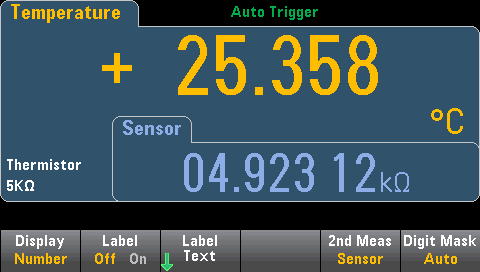
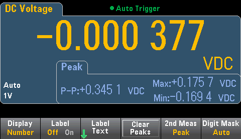

Most measurement functions allow you to select and display a secondary measurement function. Secondary measurements can be displayed in the Number and Bar Meter displays only. For example, a thermistor temperature measurement (primary) and the resistance measurement made on the thermistor (secondary) are shown below:

To select a secondary measurement from the front panel, first select the primary measurement function and then press Display:
Press 2nd Meas and select the secondary measurement.
The primary measurement functions and their associated secondary measurements for each DMM model are:
| Primary Measurement Function | 34460A/61A Secondary Measurement Function |
34465A/70A Secondary Measurement Function |
| DCV | ACV1 | ACV1, Peak, Pre-Math |
| ACV | Frequency | DCV1, Frequency, Pre-Math |
| 2-Wire, 4-Wire Resistance | Pre-Math | |
| DCI | ACI1 | ACI1, Peak, Pre-Math |
| ACI | Frequency | DCI1, Frequency, Pre-Math |
| Frequency | Period | Period, ACV, Pre-Math |
| Period | Frequency | Frequency, ACV, Pre-Math |
| Temperature | Sensor | Sensor, Pre-Math |
| Ratio | Input/Ref | Input/Ref, Pre-Math |
| Capacitance | Pre-Math | |
| Cont | None | |
| Diode | None |
Where:
1 After making one or more primary measurements for approximately 4 seconds, the DMM makes one secondary measurement.
For the Peak secondary measurement, the Clear Peaks softkey allows you to clear the accumulated history of the peak-to-peak function (resets the record of peak values).
